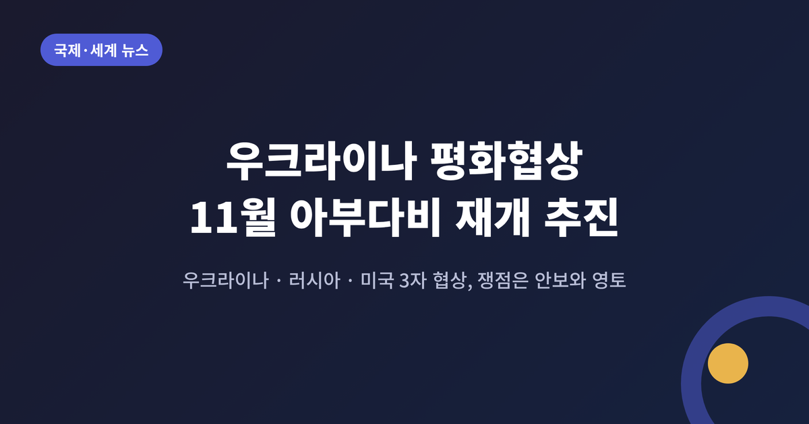
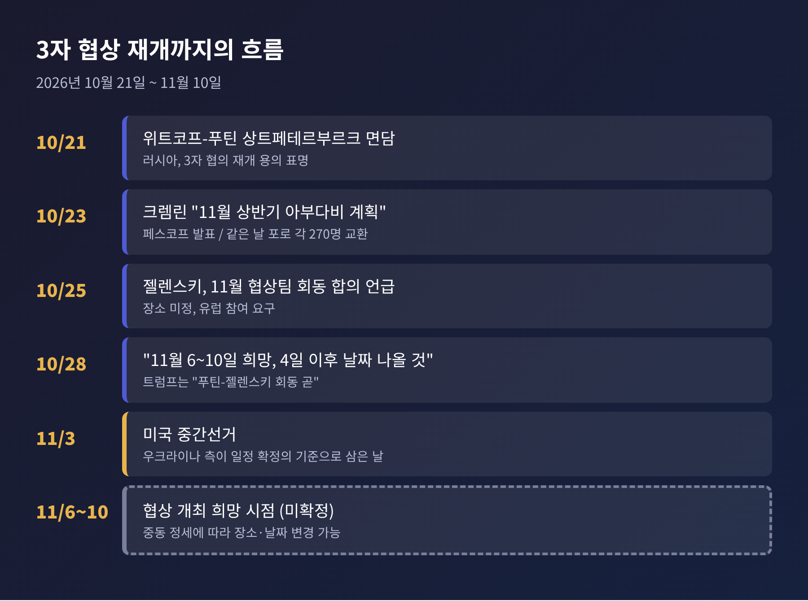
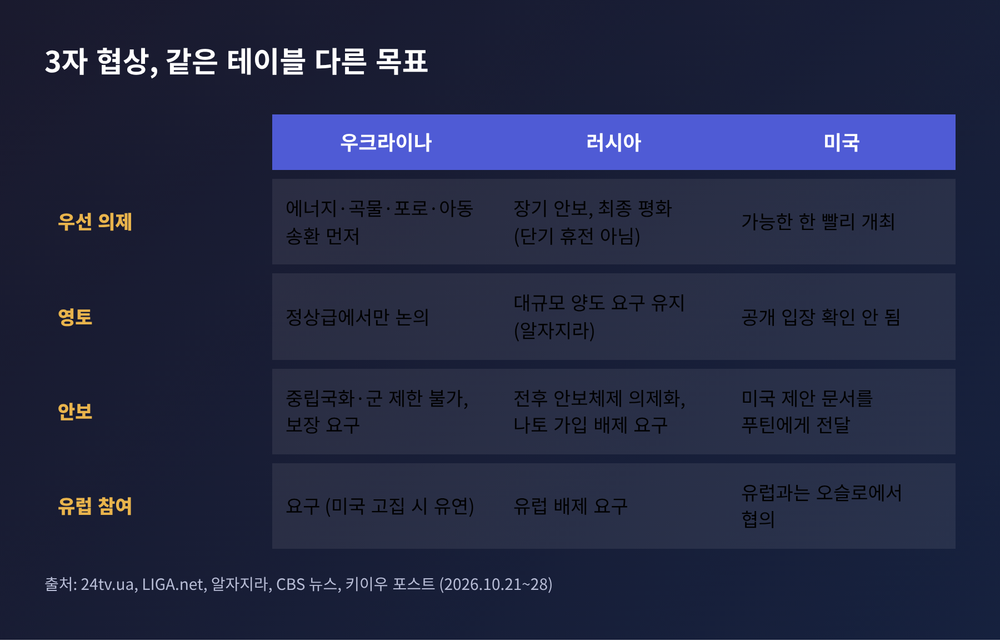
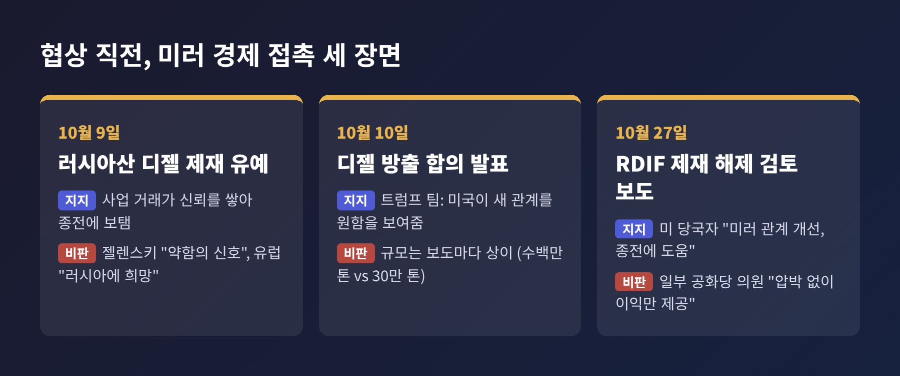
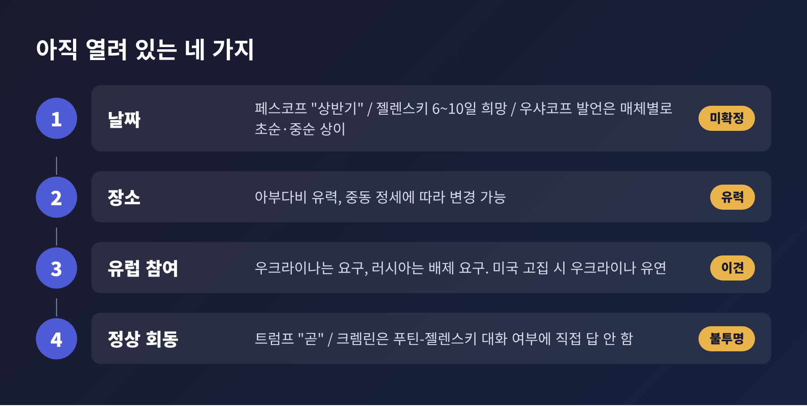
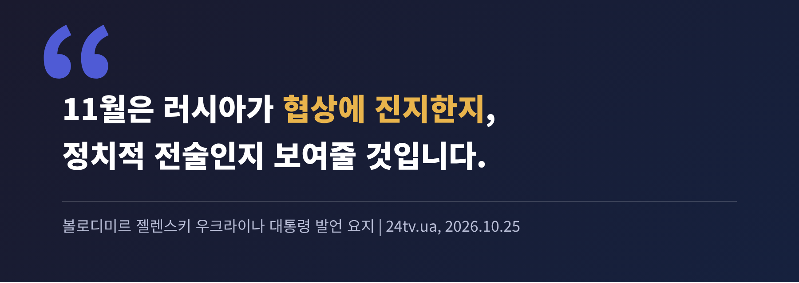

3줄 요약
오늘은 우크라이나 전쟁의 3자 평화협상이 11월에 재개되는 과정을 정리해 보려 합니다. 지난 열흘 사이 미국 특사의 모스크바 방문과 크렘린의 일정 발표가 이어졌습니다. 무엇이 정해졌고 무엇이 아직 비어 있는지 차례로 짚겠습니다.
출발점은 10월 21일입니다. 미국 특사 스티브 위트코프가 상트페테르부르크에서 블라디미르 푸틴 대통령을 만났습니다. 로이터와 CBS 뉴스에 따르면 러시아는 이 자리에서 3자 협의를 원칙적으로 재개할 용의가 있다는 뜻을 전했습니다. 푸틴의 외교 보좌관 유리 우샤코프는 의제가 전후 안보체제가 될 것이라고 설명했습니다.
이틀 뒤인 23일, 크렘린 대변인 드미트리 페스코프가 일정을 처음 공개했습니다. 협상은 "11월 상반기 아부다비에서 계획돼 있다"는 것입니다(알자지라, AFP 인용). 우크라이나의 볼로디미르 젤렌스키 대통령도 같은 날 기술 협상을 "가능한 한 빨리" 열자고 화답했습니다.
28일에는 젤렌스키가 구체적인 희망 시점을 밝혔습니다. 네덜란드 총리 롭 예턴과의 기자회견에서 "11월 6일에서 10일 사이"를 언급하며, 미국 중간선거가 끝난 "11월 4일 이후에 날짜가 나올 것"이라고 말했습니다(LIGA.net). 같은 날 도널드 트럼프 미국 대통령은 푸틴과 젤렌스키의 회동이 "곧 마련될 것"이라고 했지만, 날짜와 장소는 내놓지 않았습니다. 키이우도 모스크바도 이를 공식 확인하지 않았습니다(키이우 포스트).

올해 초에도 아부다비에서 미국 중재의 3자 협의가 있었습니다. 그러나 큰 진전 없이 흐지부지됐습니다. 알자지라는 미국이 이란과의 전쟁에 집중하면서 협상이 동력을 잃었다고 설명합니다. 10월 초로 예상됐던 비슷한 회동도 열리지 않았습니다.
그사이 전쟁의 비용은 계속 쌓였습니다. 우크라이나 검찰은 전면 침공 이후 민간인 1만 9천 명 이상이 숨졌다고 밝혔습니다. 이 가운데 어린이가 762명입니다. 올해에만 2,960명의 민간인 사망이 확인됐고, 어린이는 668명입니다(알자지라, 10월 23일). 같은 날 양측은 전쟁포로를 각각 270명씩 교환했습니다.
올해 초에는 회담 자체가 열리는 것이 뉴스였습니다. 지금은 그 안에 무엇을 담느냐가 관건입니다. 10월 11일 트럼프가 발표한 '에너지 휴전'은 양측 모두 공식적으로 동의하지 않았고, 페스코프는 그 휴전이 정의된 적이 없다고 말했습니다(CBS 뉴스, 키이우 포스트). 이번 3자 협상은 그런 모호함을 걷어낼 첫 시험대입니다.
세 나라가 같은 자리에 앉겠다는 데는 합의했습니다. 하지만 이 자리에서 무엇을 얻으려 하는지는 크게 다릅니다.

우크라이나의 입장. 젤렌스키는 "에너지, 곡물, 사람"이 구체적 의제라고 밝혔습니다. 에너지·해상 휴전, 포로와 민간인 교환, 러시아로 끌려간 아동의 송환이 여기에 속합니다. 반면 중립국 지위와 군 규모 제한은 "논의 대상이 아니다"라고 선을 그었습니다(24tv.ua, 10월 25일). 영토 문제는 정상 수준에서만 다루겠다는 입장이며, 합의안은 의회 승인을 거쳐야 한다고도 했습니다(CBS 뉴스). 안보 보장과 함께 10년간 군 유지 자금이 필요하다는 주장도 폈습니다.
러시아의 입장. 푸틴은 3자 회담이 "짧은" 휴전이 아니라 최종 평화를 위한 장기 안보 문제를 다뤄야 한다고 말했습니다(알자지라). 페스코프는 "러시아에 필요한 것은 휴전이 아니라 평화"라고 했고(키이우 포스트), 우샤코프는 위트코프가 전한 우크라이나·EU 측 제안에 "쓸모 있는 내용이 적다"고 평가했습니다(CBS 뉴스). 알자지라는 러시아가 영토의 상당 부분 양도와 나토 가입 배제 같은 강경 요구를 유지하고 있다고 전합니다. 러시아는 유럽 대표가 빠진 협상을 요구해 왔습니다.
미국의 입장. 워싱턴은 가능한 한 빨리 열자는 쪽입니다. 젤렌스키는 "미국이 이를 최대한 빨리 하자고 제안했고 우리는 지지한다"고 전했습니다(키이우 포스트). 동시에 미국은 협상 바깥에서 러시아와 경제 접촉도 넓히고 있습니다. 이 대목이 가장 논란이 큽니다.
10월 9일 트럼프 행정부는 러시아산 디젤에 대한 제재를 유예했습니다. 이어 러시아가 디젤을 몇 달에 걸쳐 내놓는 합의가 발표됐습니다. 규모는 보도마다 다릅니다. CBS 뉴스는 '수백만 톤'이라고 했고, 알자지라는 미국이 30만 톤을 사기로 했다고 전합니다. 젤렌스키는 이를 "약함의 신호"라고 평가했고, 유럽 지도자들은 러시아에 "희망"을 줘 평화를 어렵게 한다고 비판했습니다.
10월 27일에는 뉴욕타임스가 한 걸음 더 나간 보도를 내놓았습니다. 트럼프 행정부가 러시아직접투자펀드(RDIF)의 제재 해제 신청을 검토하고 있다는 내용입니다. 바이든 행정부가 2022년 2월 침공 직후 제재하며 '푸틴의 비자금'이라 불렀던 곳입니다. 한 미국 당국자는 "미러 관계 개선과 종전에 도움이 된다"는 취지로 검토 이유를 설명했습니다. 반면 일부 공화당 의원을 포함한 비판자들은 푸틴에게 압박 없이 경제적 이익만 준다고 지적합니다.
양쪽 논리는 이렇게 갈립니다. 트럼프 팀은 사업 거래가 신뢰를 쌓아 종전에 보탬이 된다고 봅니다. 비판하는 쪽은 제재라는 협상 카드를 협상이 열리기도 전에 내려놓는다고 봅니다. 어느 쪽이 맞는지는 아직 알 수 없습니다. 다만 RDIF 건은 검토 단계이며 결정이 내려진 것은 아닙니다.

사실 확정된 것은 많지 않습니다. 아래 네 가지가 열려 있습니다.

젤렌스키는 11월이 러시아가 협상에 진지한지, 푸틴의 발언이 정치적 전술인지 보여줄 것이라고 말했습니다(24tv.ua).

저는 이 평가가 절반쯤은 맞다고 생각합니다. 러시아도, 미국도 각자의 계산을 갖고 테이블에 앉기 때문입니다.
관전 포인트는 세 가지로 정리됩니다.
한계도 분명합니다. 알자지라가 지적했듯 10월 초 예정된 회동은 열리지 않았고, 러시아의 핵심 요구는 그대로입니다. 이번에도 날짜가 미뤄질 가능성을 배제하기 어렵습니다.
정리하면 이렇습니다. 협상 테이블은 다시 놓이고 있지만, 앉는 세 나라가 그리는 종착점은 서로 다릅니다.
"자리가 마련됐다는 것과 합의가 가까워졌다는 것은 다른 이야기입니다."
11월 6일에서 10일 사이 아부다비에서 의자가 실제로 채워지는지, 그 결과를 지켜보시길 권합니다.
이 글은 2026년 11월 1일 기준 공개 보도를 바탕으로 했으며, 이후 상황에 따라 일정과 내용이 바뀔 수 있습니다. 참고: 로이터, CBS 뉴스, 알자지라(AFP), 키이우 포스트, LIGA.net, 24tv.ua, UNN, 뉴욕타임스(보스턴글로브 재게재), 뉴스오브바레인.